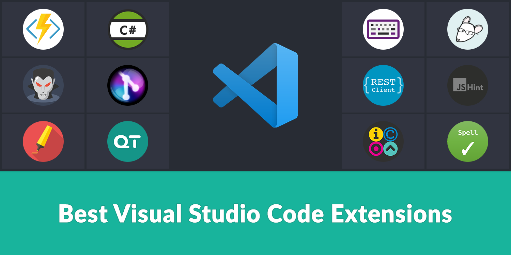

What is Visual Studio Code?
It's a source-code-editor made by Microsoft for Windows, Linux, and MacOS.
Install NowUsage of git
- Source Control button on the left (Ctrl + Shift + G)
- It can check if the files are on Staged, Unstaged, Modified state.
- It can take Commit, Push, and Pull, or can link to Github
- Any information of Github?
>>Github

Extensions
It helps developer to code more conveniently.
-

Intellisense
Intellisense is a system that provides quick info, parameter info, or member lists of where cursor is pointing.
Programming languages with intellisense- Python
- C/C++
- C#
- Java
- etc
-

Indent-rainbow
It makes developer hard to confuse with indent line.
How to use?
1. Open folder
Open Folder where you are working on. (Ctrl + O)
2. Create file
Create a file and set the language and the name. (Ctrl + N)
3. Work with terminal
Open terminal to work with your files or projects. (Ctrl + Shift + `)